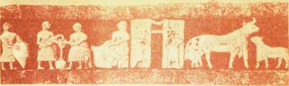

Сыр и пирамида Хеопса

Раскопками в районе Вавилона обнаружено здание, построенное более 6000 лет назад, одна из стен которого украшена бордюром, изображающим людей (заметим, мужчин), доящих коров в высокие кувшины. Такие свидетельства использования в быту коровьего, козьего, овечьего молока подтверждены открытиями археологов во многих местах Древнего Востока. У нас нет оснований утверждать, что сыр был любимым кушаньем царя Хаммурапи, правившего Древневавилонским государством около 4 тысяч лет назад, или фараона Хеопса, в годы владычества которого была воздвигнута величайшая пирамида, стоящая уже пятое тысячелетие, но, видимо, и в те времена, и значительно раньше молоко и сыр были обычной пищей у народов Древнего Востока. Надо думать, что сыр в простейшем виде люди научились делать раньше, чем строить здания с бордюрами или пирамиды высотой с пятидесятиэтажный дом.
Это предположение, основанное на сравнении сложности процессов, нетрудно подкрепить древними письменными источниками. В инвентаризационных списках, составленных за несколько тысячелетий до наших дней, упоминается сыр.
Даже в Европе, которую в период расцвета Востока еще покрывали девственные леса и болота, уже тысячи лет назад использовали молоко, и в некоторых странах континента сыр имеет многовековую историю.
На территории Советского Союза в местах древних поселений, существовавших за 2–3 тысячи лет до нашей эры, в частности вблизи села Триполье на Украине, найдены глиняные кувшины для молока. Можно предположить, что и наши далекие предки умели приготовлять из молока нечто подобное сыру в простейшем виде.
С незапамятных времен известен сыр в Армении, что подтверждается книгой «Анабасис» древнегреческого историка Ксенофонта.
Словом, сыр — древнейший продукт. Вскоре за одомашниванием животных к человеку пришло умение использовать молоко для приготовления различных продуктов. Древний человек обнаружил, что если скисшее молоко отжать, остается довольно плотная масса, которую после высушивания можно хранить.
Такого рода сыр и сейчас делают кое-где на Востоке и в Африке. Перед употреблением в пищу его размачивают продолжительное время в воде.
И в нашей стране такой сыр известен с древних времен. Народы, давным-давно населявшие некоторые районы нынешней Сибири, превращали сквашенное молоко в творожную массу, которую коптили над костром и употребляли в пищу вместо хлеба.

Эта фреска, изображающая получение и подготовку молока для переработки, относится к третьему тысячелетию до нашей эры (музей в Багдаде)
Но и сыры высшего типа, изготовление которых основано на введении в молоко ферментов, были известны в древности. В истории не зафиксировано, когда человек впервые применил для свертывания молока фермент растительного или животного происхождения. Трудно предположить обстоятельства того счастливого случая, который позволил обнаружить, что если внести в молоко сгусток его, взятый из желудка ягненка, или слизистую оболочку самого желудка, или соцветия чертополоха, семена дикого шафрана, молочный сок фигового дерева или винный уксус, то молоко свернется. Независимо от того, при каких обстоятельствах и когда это произошло, с применения ферментов начался новый этап развития сыроделия, появился качественно иной продукт, основной принцип изготовления которого дошел до наших дней.